<!DOCTYPE html>
<html lang="es">
<head>
  <meta charset="UTF-8">
  <title>COBYBSA Construcción Industrial</title>
  <meta name="viewport" content="width=device-width, initial-scale=1">
  <link rel="stylesheet" href="style.css">
</head>

<script src="js-novedades.js"></script>
</body>
</html>

<body>
  <!-- HEADER -->
  <header class="site-header">
    <div class="container header-inner">
      <!-- LOGO COBYBSA -->
      <a href="#inicio" class="logo">
        <!-- CAMBIA el src si tu archivo tiene otro nombre -->
        
      </a>

      <nav class="main-nav">
        <a href="#inicio">Inicio</a>
        <a href="#historia">Historia</a>
        <a href="#capacidades">capacidades</a>
        <a href="#proyectos">Proyectos</a>
        <a href="#contacto">Contacto</a>
      </nav>
    </div>
  </header>

  <main id="inicio">
    <!-- HERO -->
    <section class="hero">
      <div class="container hero-inner">
        <div class="hero-content">
          <div class="badge">
            <span class="badge-dot"></span>
            Ingeniería mecánica de alta precisión
          </div>
          <h1>soluciones metalmecánicas diseñadas para el nivel de exigencia de su industria</h1>
          <p>
            En COBYBSA diseñamos y fabricamos estructuras, tanques, accesorios y soluciones
             industriales, con estándares de precisión que garantizan desempeño y confiabilidad en cada operación.
            </p>
            "El nivel más alto de calidad es <strong><span>Cobybsa</strong></span>"
          </p>

          <div class="hero-actions">
            <a href="#contacto" class="btn btn-primary">
              Solicitar cotización
              <span>→</span>
            </a>
            <a href="#proyectos" class="btn btn-ghost">
              Ver proyectos
            </a>
          </div>

          <div class="hero-meta">
            <span><strong>40+ años</strong> de experiencia</span>
            <span><strong>Alimenticia, Médica, Farmacéutica</strong></span>
          </div>
        </div>

        <div class="hero-media">
          <div class="hero-card">
            <!-- Usa tu foto hero real, por ahora apunto a hero-guantes -->
            
            <div class="hero-chip">
            </div>
            </div>
       </div>
     </section>

    <section id="inicio"> ... </section>

<!-- ===== NOVEDADES ===== -->
<section id="novedades" class="news-section">
  <div class="news-header">
    <div>
      <h2>Novedades</h2>
      <p>Actualizaciones recientes sobre tecnología, equipo, personal y proyectos.</p>
    </div>

    <div class="news-controls">
      <button class="news-btn news-prev">‹</button>
      <button class="news-btn news-next">›</button>
    </div>
  </div>

  <div class="news-carousel">
    <div class="news-track">
      
  
      <!-- Novedad 5 -->
      <article class="news-card">
        <div class="news-image">
          
        </div>
        <span class="news-tag">Actualización</span>
        <h3>Agenda de fin de año y proyectos 2026</h3>
        <p>
          Durante esta temporada estamos cerrando proyectos de 2025 y reservando capacidad para el primer trimestre de 2026.
          Si su empresa planea renovar equipos, estructuras o tanques el próximo año, es el momento ideal para enviarnos sus planos y asegurar un espacio en nuestra programación.
          Le deseamos felices fiestas y un 2026 lleno de proyectos exitosos.
        </p>
        <span class="news-date">Noviembre 2025</span>
      </article>

      <!-- Novedad 4 -->
      <article class="news-card">
        <div class="news-image">
          
        </div>
        <span class="news-tag">Equipo</span>
        <h3>Nuevo torno suizo de precisión</h3>
        <p>
          Incorporamos un torno suizo de alta precisión para piezas pequeñas con tolerancias extremadamente finas.
        </p>
        <span class="news-date">octubre 2025</span>
      </article>

      <!-- Novedad 3 -->
      <article class="news-card">
        <div class="news-image">
          
        </div>
        <span class="news-tag">Corte Láser</span>
        <h3>Capacidad disponible en corte láser</h3>
        <p>
          Hemos optimizado la programación de nuestra máquina de corte láser, liberando más horas de trabajo para nuevos proyectos.
          Esto nos permite responder con mayor rapidez a diseños personalizados y series cortas.
          Si tiene piezas que requieren precisión y buenos tiempos de entrega, envíenos su consulta y reservamos espacio en agenda para su proyecto.
        </p>
        <span class="news-date">octubre 2025</span>
      </article>

      <!-- Novedad 2 -->
      <article class="news-card">
        <div class="news-image">
          
        </div>
        <span class="news-tag">Materiales</span>
        <h3>Acero inoxidable en stock para sus proyectos</h3>
        <p>
          Contamos con inventario disponible de láminas y tubos de acero inoxidable en diferentes espesores y formatos, listo para fabricación inmediata.
          Esto reduce los tiempos de espera y facilita el arranque de proyectos urgentes o prototipos.
          Consúltenos por las dimensiones que necesita y le ayudamos a definir la mejor solución para su aplicación.
        </p>
        <span class="news-date">octubre 2025</span>
      </article>

      <!-- Novedad 1 -->
      <article class="news-card">
        <div class="news-image">
          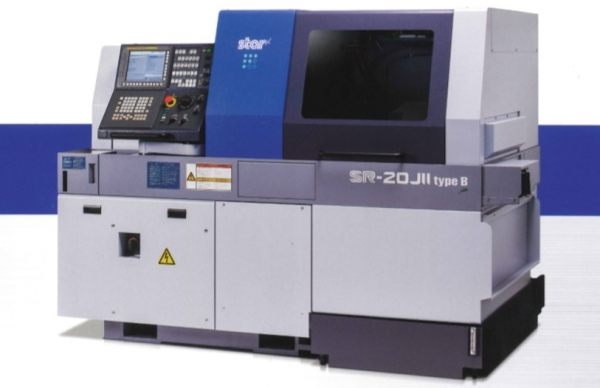
        </div>
        <span class="news-tag">Actualización</span>
        <h3>Verificación y calibración de equipos</h3>
        <p>
          En COBYBSA realizamos un proceso interno de verificación y calibración de nuestros equipos de fabricación, incluyendo áreas clave como corte láser, mecanizado y modelado.
Estas revisiones periódicas nos permiten asegurar que cada máquina mantenga su precisión original y continúe ofreciendo resultados consistentes en cada proyecto.
Aunque es un ajuste interno rutinario, refleja nuestro compromiso con el orden, el cuidado del taller y la fiabilidad en todos nuestros procesos.
        </p>
        <span class="news-date">septiembre 2025</span>
      </article>

    </div>
  </div>
</section>

<section id="historia"> ... </section>

<!-- ===== HISTORIA COBYBSA ===== -->
<section id="historia" class="history-section">
  <div class="history-overlay"></div>
  <div class="history-timeline">
  <div class="history-step history-step-1">
    <div class="history-step-content">
      <h3>Los inicios · 1990s</h3>
      <p>
        Nacemos como un taller familiar pequeño, enfocado en trabajos locales
        y soluciones a medida para clientes cercanos.
      </p>
    </div>
  </div>

  <div class="history-step history-step-2">
    <div class="history-step-content">
      <h3>Evolución · 2000–2015</h3>
      <p>
        Incorporamos corte láser, mecanizado CNC y modelado 3D, pasando de
        encargos puntuales a proyectos industriales más complejos.
      </p>
    </div>
  </div>

  <div class="history-step history-step-3">
    <div class="history-step-content">
      <h3>Industria actual · 2025</h3>
      <p>
        COBYBSA se consolida como aliado técnico para empresas de distintos
        sectores, manteniendo el origen familiar y el enfoque en la calidad.
      </p>
    </div>
  </div>
</div>
  </div>
</section>

    <div class="cap-grid">

 <!-- ===== CAPACIDADES ===== -->
<section id="capacidades" class="capabilities-section">

  <!-- Capacidad 1 -->
  <div class="capability">
    <div class="capability-text">
      <h3>Precisión</h3>
      <p>
        Fabricación de piezas en acero inoxidable con tolerancias ajustadas y acabados controlados.
        Desarrollamos componentes de alta precisión como pines, ejes, bujes, engranajes y piezas pequeñas
        que requieren estabilidad dimensional. Utilizamos torno y equipos especializados para garantizar
        exactitud y calidad constante en aplicaciones industriales, médicas y alimentarias.
      </p>
    </div>
    <div class="capability-image">
      
    </div>
  </div>

  <!-- Capacidad 2 -->
  <div class="capability">
    <div class="capability-text">
      <h3>Corte</h3>
      <p>
        Corte láser de alta definición en acero inoxidable, aluminio y otros metales, ideal para
        geometrías complejas y acabados limpios. Complementamos el proceso con mecanizado CNC para
        perfeccionar detalles, cavidades, perforaciones y superficies técnicas. La combinación de
        láser + CNC nos permite entregar piezas precisas, funcionales y listas para ensamblaje.
      </p>
    </div>
    <div class="capability-image">
      
    </div>
  </div>

  <!-- Capacidad 3 -->
  <div class="capability">
    <div class="capability-text">
      <h3>Diseño y modelado 3D</h3>
      <p>
        Modelado 3D, simulaciones y prototipos para validar geometrías, ensamblajes y funcionamiento antes
        de fabricar. Reducimos errores y optimizamos tiempos mediante visualizaciones detalladas y diseños
        listos para producción. Ideal para proyectos personalizados, estructuras metálicas y componentes
        sanitarios o especiales.
      </p>
    </div>
    <div class="capability-image">
      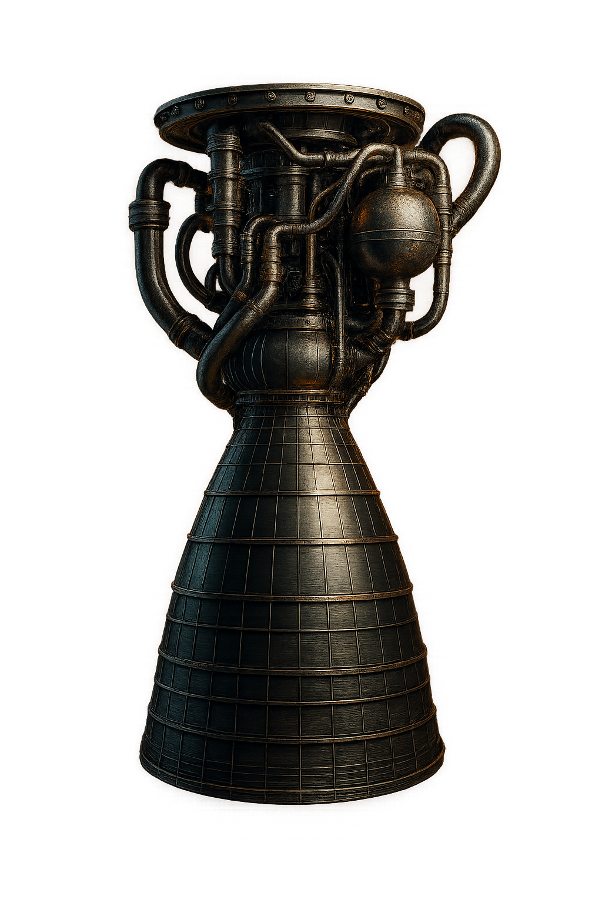
    </div>
  </div>
</section>
    <!-- PROYECTOS (12) -->
    <section id="proyectos" class="section">
          <div class="container projects-inner">
      <header class="projects-header">
        <h2>Proyectos</h2>
        <p>
          Una selección de proyectos realizados para distintos sectores:
          industrial, alimentario, médico y soluciones personalizadas.
        </p>
      </header>

     <div class="projects-grid">
    <!-- 1 -->
    <article class="project-card">
        <div class="project-image">
            <div class="project-gallery">
              <button class="proj-arrow left" onclick="scrollProyecto('proj1', -1)">‹</button>

              <div id="proj1" class="project-gallery-track">
                
                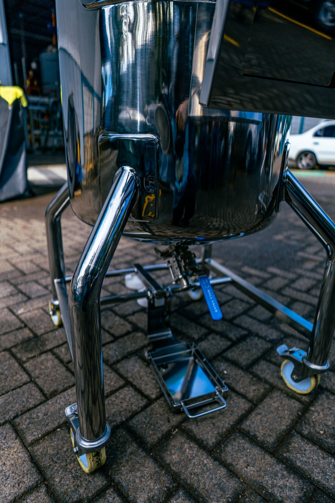
                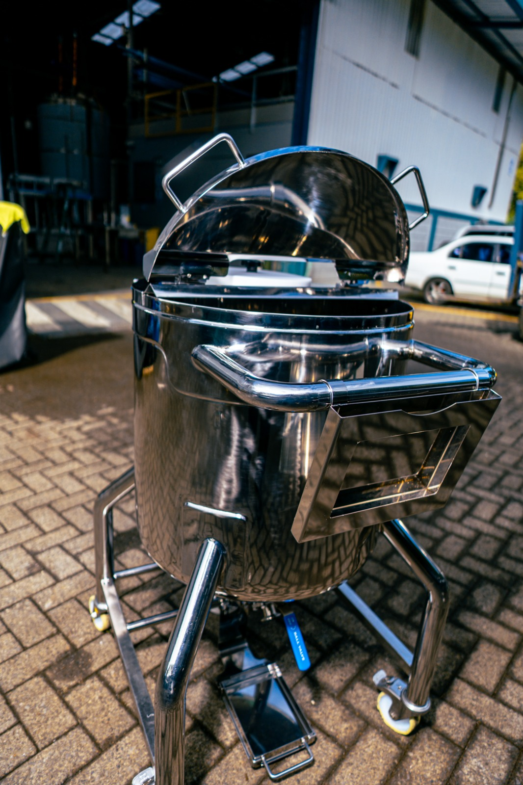
              </div>

              <button class="proj-arrow right" onclick="scrollProyecto('proj1', 1)">›</button>
            </div>
        </div>

        <h3>Tanques móviles de mezclado sanitario</h3>
        <p>Tanques diseñados para procesos de mezclado sanitario que requieren movilidad, estabilidad y precisión.
        Fabricados en acero inoxidable y equipados con estructura reforzada, ruedas industriales y conexiones higiénicas,
        estos recipientes están pensados para trabajar bajo mezcladoras verticales, facilitando la integración entre equipos
        y optimizando la manipulación del producto durante el proceso.</p>
    </article>
</div>

       <!-- 2 -->
<article class="project-card">
  <div class="project-image">
    <div class="project-gallery">
      <button class="proj-arrow left" onclick="scrollProyecto('proj2', -1)">‹</button>

      <div id="proj2" class="project-gallery-track">
        
        
        
      </div>

      <button class="proj-arrow right" onclick="scrollProyecto('proj2', 1)">›</button>
    </div>
  </div>

  <h3>Equipos de Mezclado Sanitario de Alto Rendimiento</h3>
  <p>
    Equipos de mezclado vertical diseñados para procesos de alta precisión en la elaboración de gel para implantes.
    Incorporan sistemas de control, agitación uniforme y acabados sanitarios que garantizan estabilidad, calidad y repetitibilidad en cada lote.
  </p>
</article>

       <!-- 3 -->
<article class="project-card">
  <div class="project-image">
    <div class="project-gallery">
      <button class="proj-arrow left" onclick="scrollProyecto('proj3', -1)">‹</button>

      <div id="proj3" class="project-gallery-track">
        
        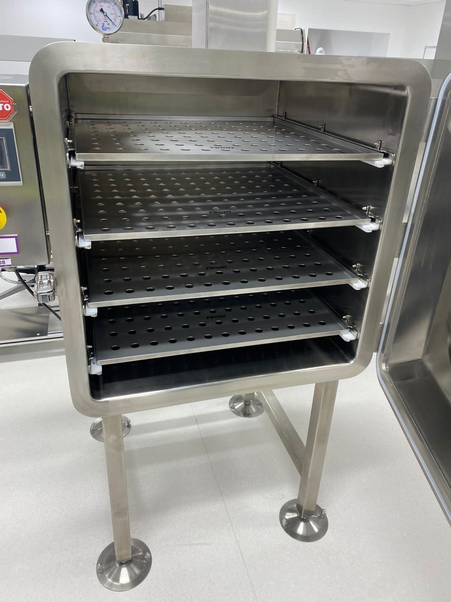
        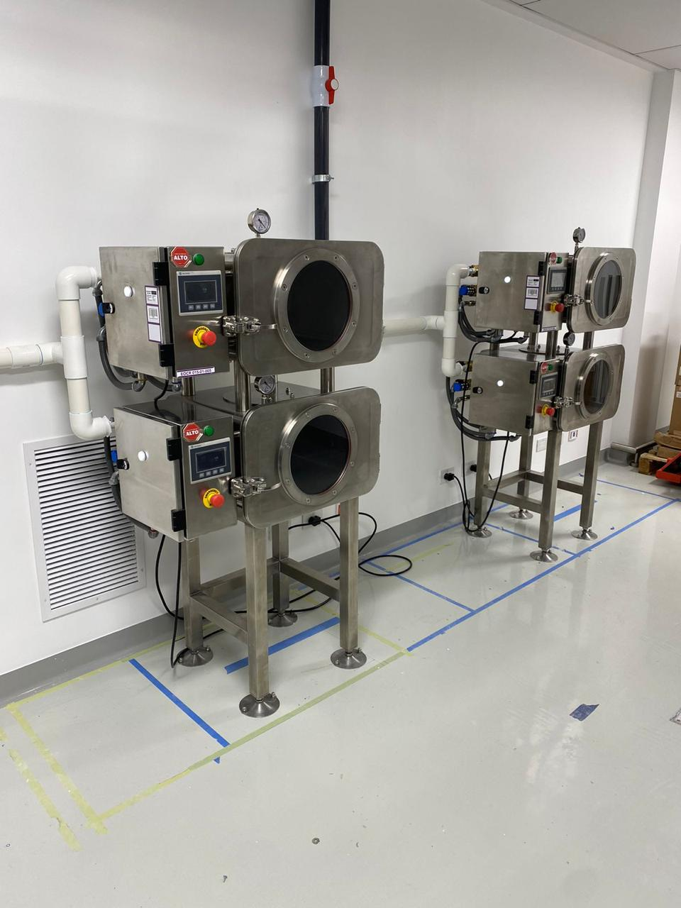
      </div>

      <button class="proj-arrow right" onclick="scrollProyecto('proj3', 1)">›</button>
    </div>
  </div>

  <h3>Cámaras de vacío para desgasificación de geles</h3>
  <p>
    Equipos de vacío diseñados para procesos de desgasificación en productos semiviscosos, permitiendo remover burbujas de aire atrapadas
    y asegurar una mezcla uniforme y libre de cavidades. Fabricadas en acero inoxidable y equipadas con sistemas de control digital,
    estas cámaras ofrecen una operación estable, segura y altamente higiénica dentro de entornos controlados.
    Su estructura robusta y su diseño vertical permiten integrar el equipo fácilmente en líneas de producción que requieren precisión y consistencia en cada lote.
  </p>
</article>

       <!-- 4 -->
<article class="project-card">
  <div class="project-image">
    <div class="project-gallery">
      <button class="proj-arrow left" onclick="scrollProyecto('proj4', -1)">‹</button>

      <div id="proj4" class="project-gallery-track">
        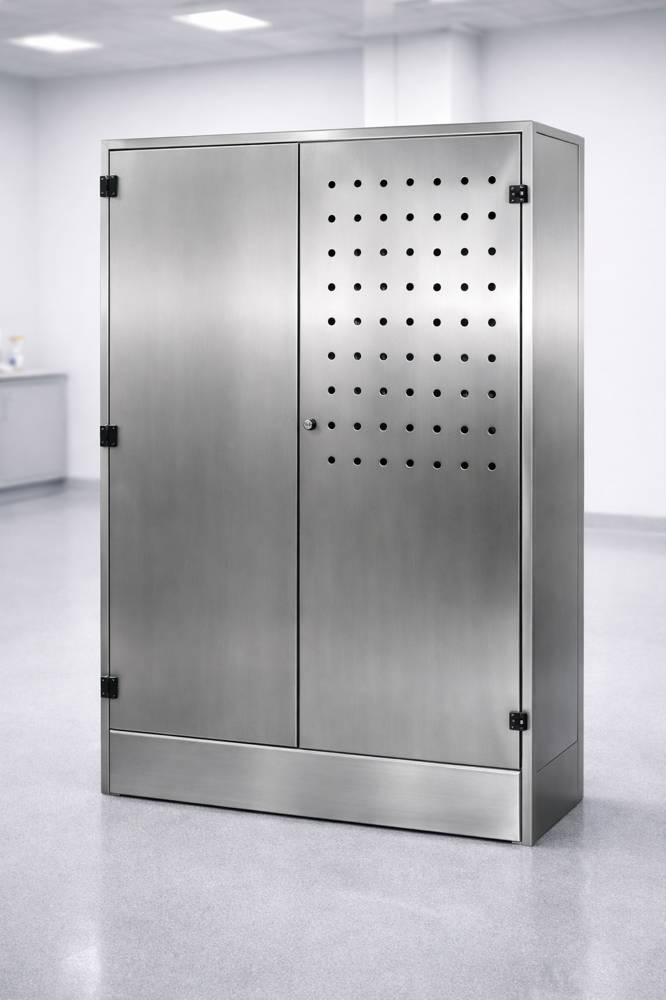
        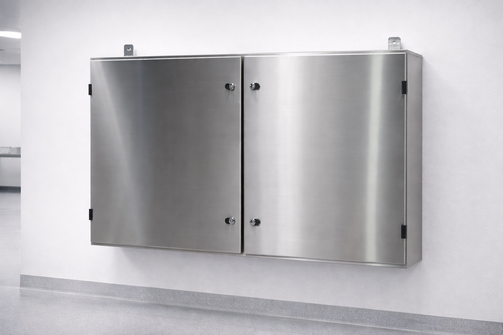
        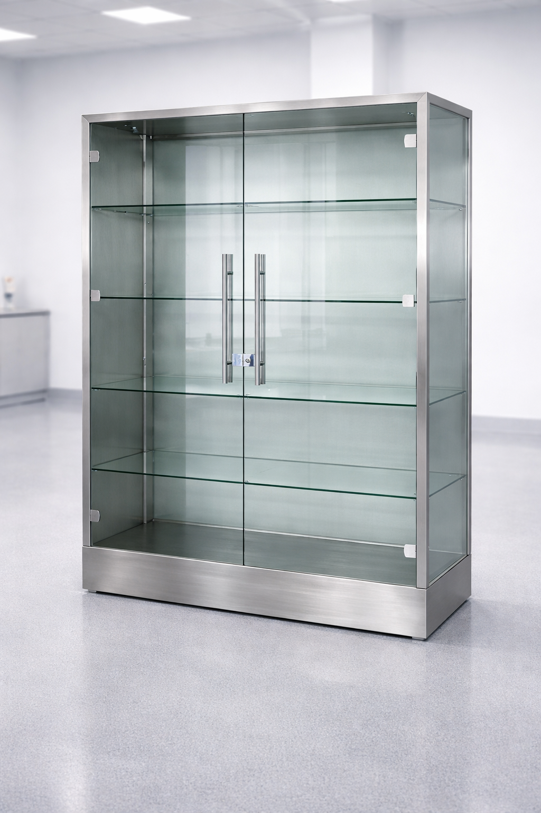
      </div>

      <button class="proj-arrow right" onclick="scrollProyecto('proj4', 1)">›</button>
    </div>
  </div>

  <h3>Sistema de inspección con detector de metales</h3>
  <p>Equipo de inspección diseñado para detectar impurezas metálicas en líneas de producción, garantizando un control de calidad preciso y confiable.</p>
</article>


<!-- 5 -->
<article class="project-card">
  <div class="project-image">
    <div class="project-gallery">
      <button class="proj-arrow left" onclick="scrollProyecto('proj5', -1)">‹</button>

      <div id="proj5" class="project-gallery-track">
        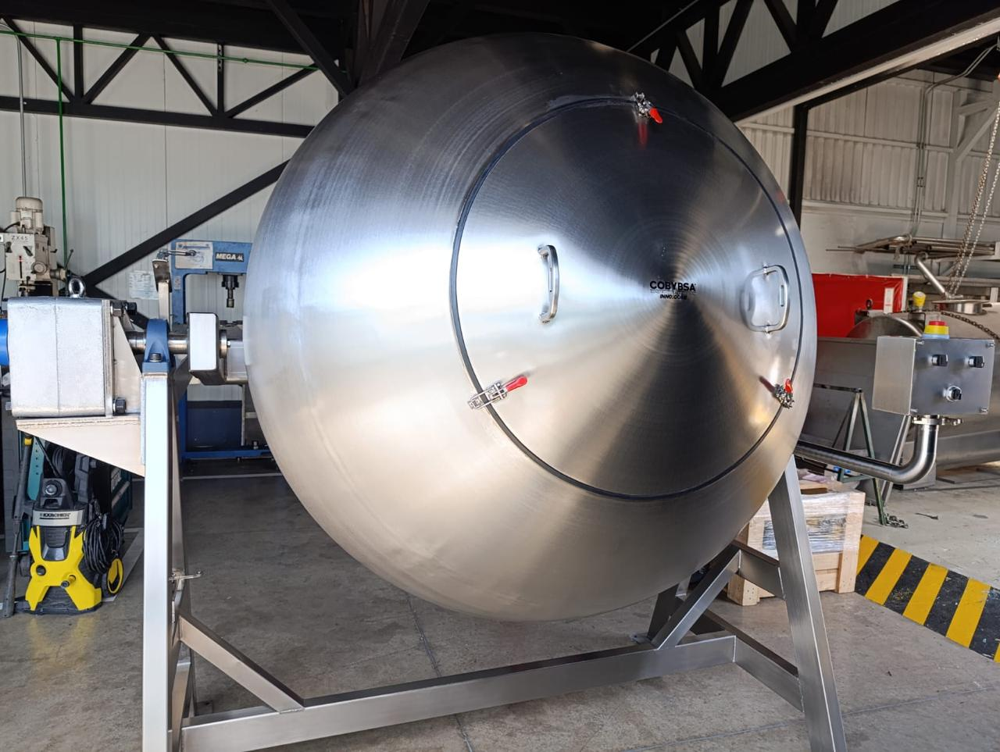
        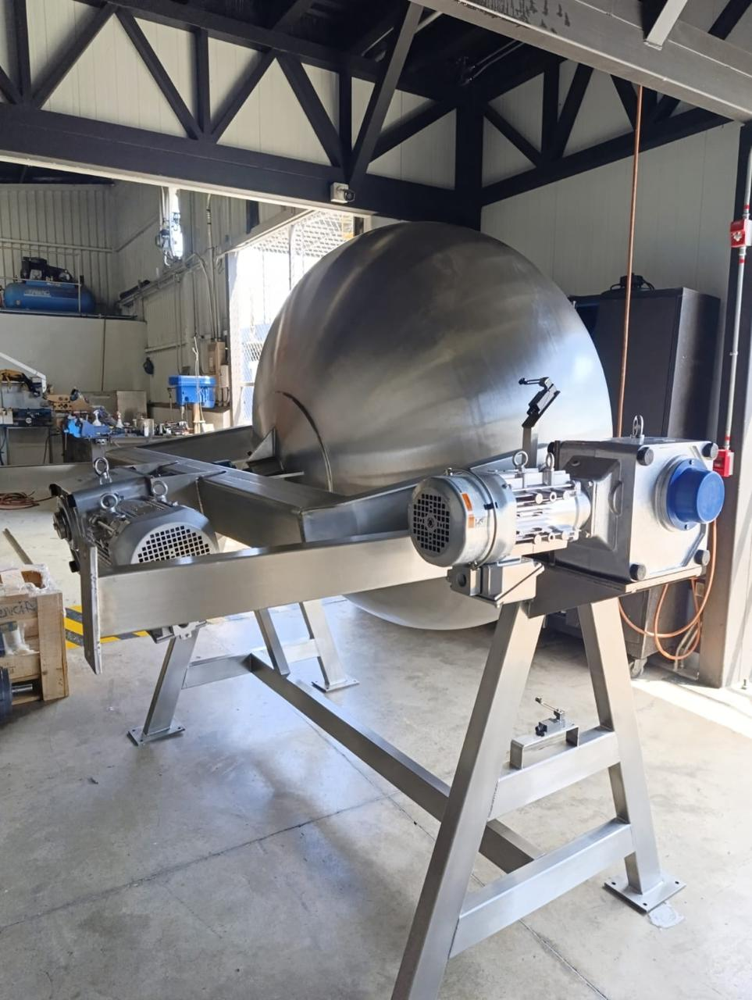
        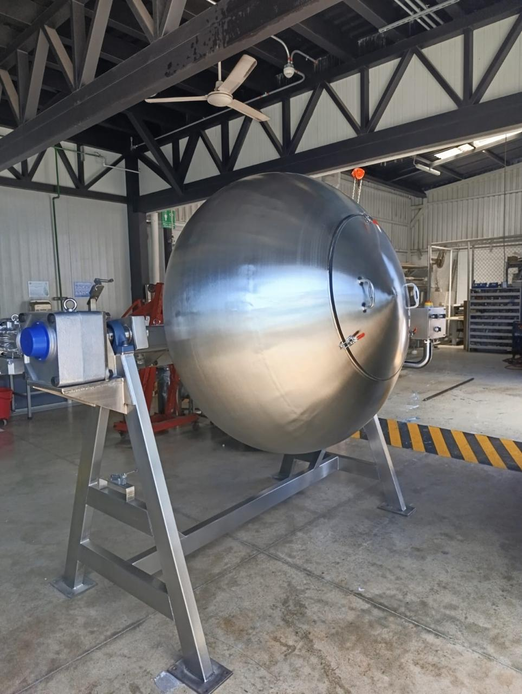
      </div>

      <button class="proj-arrow right" onclick="scrollProyecto('proj5', 1)">›</button>
    </div>
  </div>

  <h3>Bombo de Mezclado Rotativo de Alta Capacidad</h3>
  <p>Está diseñado para procesos que requieren una agitación uniforme y controlada en volúmenes medianos y altos. Su estructura en acero inoxidable grado industrial garantiza higiene, resistencia y estabilidad durante la operación.</p>
</article>


<!-- 6 -->
<article class="project-card">
  <div class="project-image">
    <div class="project-gallery">
      <button class="proj-arrow left" onclick="scrollProyecto('proj6', -1)">‹</button>

      <div id="proj6" class="project-gallery-track">
        
        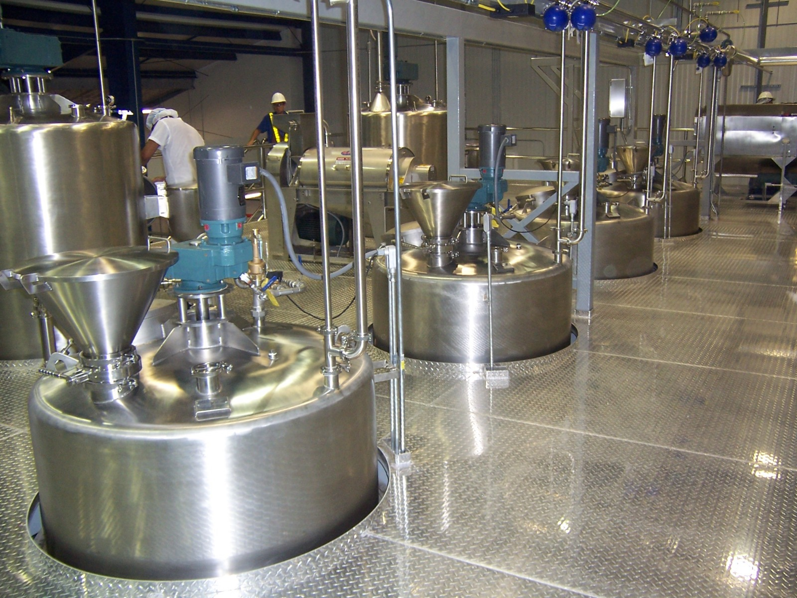
        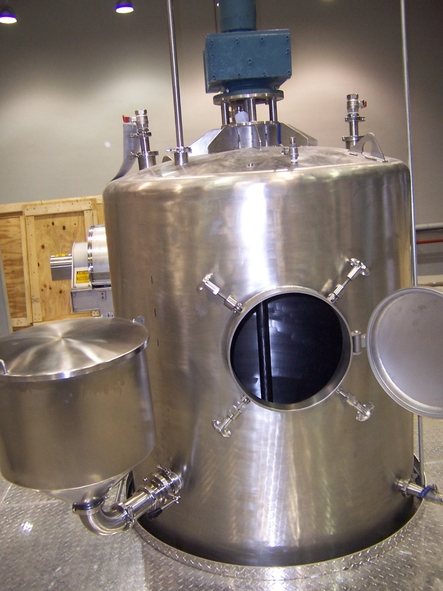
      </div>

      <button class="proj-arrow right" onclick="scrollProyecto('proj6', 1)">›</button>
    </div>
  </div>

  <h3>Sistema Industrial Completo para Planta Alimentaria</h3>
  <p>En esta instalación se fabricaron íntegramente los tanques, plataformas y equipos estructurales necesarios para el proceso productivo de una planta alimentaria.
     La empresa desarrolló todas las estructuras metálicas, garantizando resistencia, higiene industrial y funcionamiento continuo.
     Este proyecto refleja la capacidad de asumir trabajos de gran escala con altos requisitos sanitarios y mecánicos.
     Fue un paso clave en la transición hacia proyectos más complejos y especializados dentro del sector industrial.</p>
</article>


<!-- 7 -->
<article class="project-card">
  <div class="project-image">
    <div class="project-gallery">
      <button class="proj-arrow left" onclick="scrollProyecto('proj7', -1)">‹</button>

      <div id="proj7" class="project-gallery-track">
        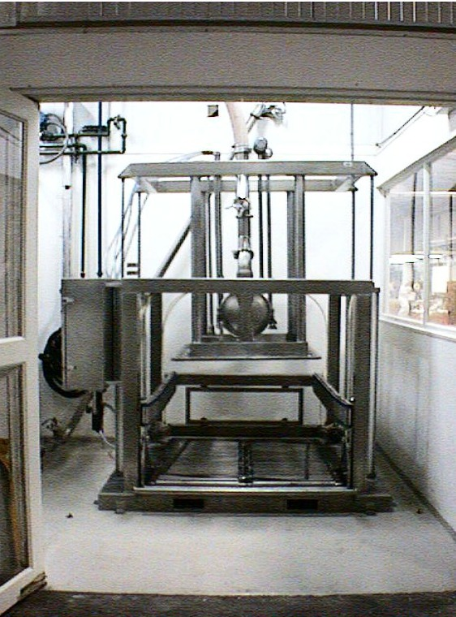
        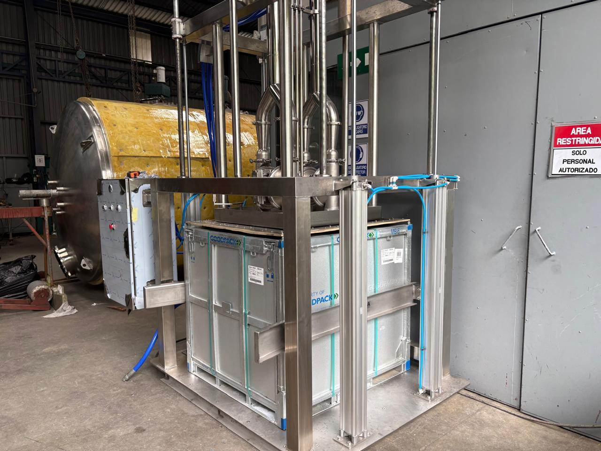
        
      </div>

      <button class="proj-arrow right" onclick="scrollProyecto('proj7', 1)">›</button>
    </div>
  </div>

  <h3>Primera Descargadora de Totes – Innovación 2004</h3>
  <p>Esta fue la primera descargadora de totes fabricada por la empresa en el año 2004, marcando un salto significativo hacia maquinaria industrial especializada.
     Desde entonces se han construido cuatro unidades adicionales, todas operando sin fallas hasta la fecha.
     Su diseño combina resistencia, estabilidad y operación segura para procesos de descarga de productos a granel.</p>
</article>


<!-- 8 -->
<article class="project-card">
  <div class="project-image">
    <div class="project-gallery">
      <button class="proj-arrow left" onclick="scrollProyecto('proj8', -1)">‹</button>

      <div id="proj8" class="project-gallery-track">
        
        
        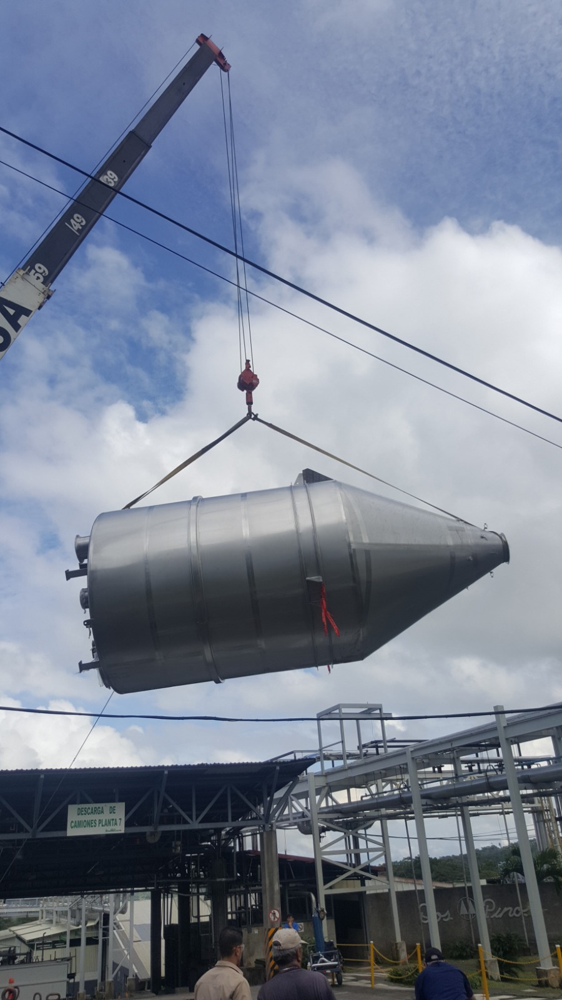
      </div>

      <button class="proj-arrow right" onclick="scrollProyecto('proj8', 1)">›</button>
    </div>
  </div>

  <h3>Tanque Industrial de Acero Inoxidable – Fabricación 2004</h3>
  <p>Este tanque industrial de acero inoxidable fue producido en el 2004 para aplicaciones de almacenamiento y manejo de líquidos en procesos alimentarios o químicos.
     Su estructura elevada, soportes reforzados y soldaduras sanitarias aseguran estabilidad y limpieza en entornos de producción.
     La fabricación de equipos como este consolidó la experiencia de la empresa en recipientes a presión y soluciones de proceso.
     Estos proyectos tempranos sirvieron como base para el nivel de ingeniería que la empresa maneja hoy.</p>
</article>


<!-- 9 -->
<article class="project-card">
  <div class="project-image">
    <div class="project-gallery">
      <button class="proj-arrow left" onclick="scrollProyecto('proj9', -1)">‹</button>

      <div id="proj9" class="project-gallery-track">
        
        
        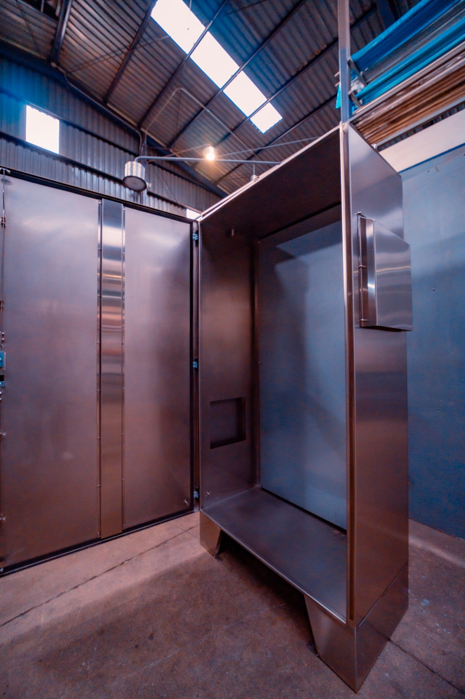
      </div>

      <button class="proj-arrow right" onclick="scrollProyecto('proj9', 1)">›</button>
    </div>
  </div>

  <h3>Nuevo proyecto</h3>
  <p>Descripción breve del proyecto.</p>
</article>


<!-- 10 -->
<article class="project-card">
  <div class="project-image">
    <div class="project-gallery">
      <button class="proj-arrow left" onclick="scrollProyecto('proj10', -1)">‹</button>

      <div id="proj10" class="project-gallery-track">
        
        
        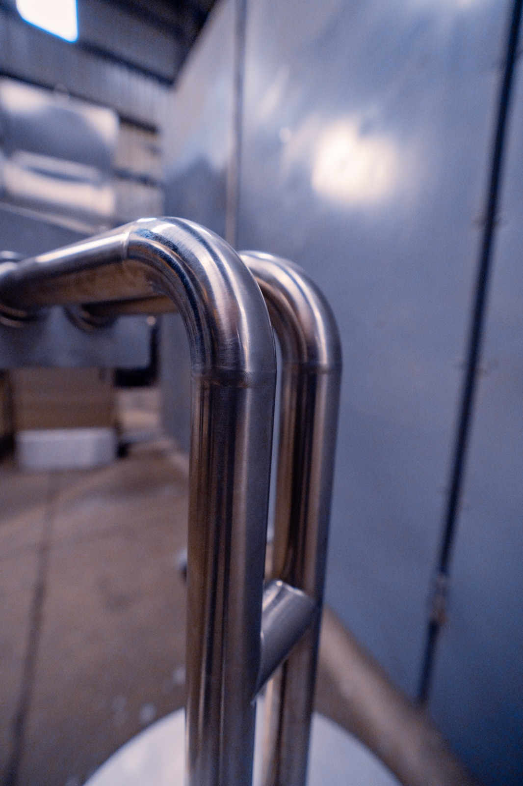
      </div>

      <button class="proj-arrow right" onclick="scrollProyecto('proj10', 1)">›</button>
    </div>
  </div>

  <h3>Nuevo proyecto</h3>
  <p>Descripción breve del proyecto.</p>
</article>


<!-- 11 -->
<article class="project-card">
  <div class="project-image">
    <div class="project-gallery">
      <button class="proj-arrow left" onclick="scrollProyecto('proj11', -1)">‹</button>

      <div id="proj11" class="project-gallery-track">
        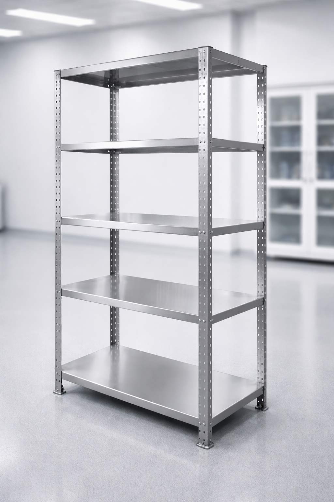
        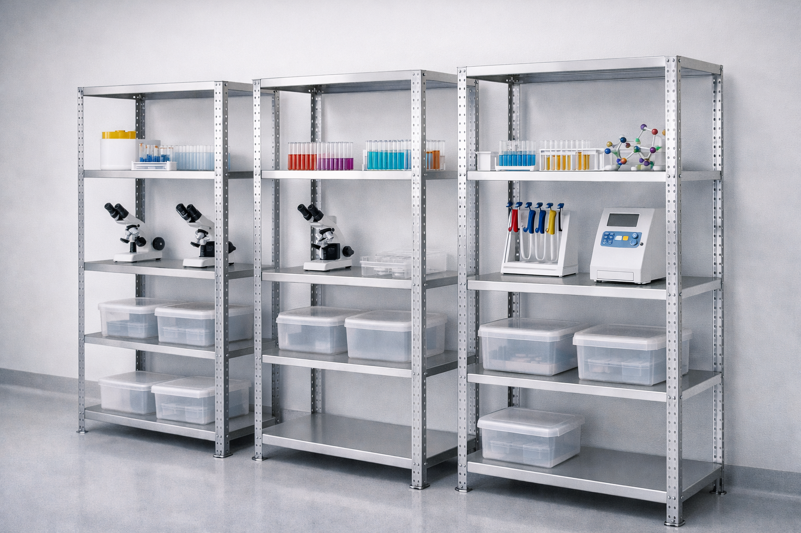
        
      </div>

      <button class="proj-arrow right" onclick="scrollProyecto('proj11', 1)">›</button>
    </div>
  </div>

  <h3>Sistema de Baloncesto Fabricado en Taller</h3>
  <p>Este sistema de baloncesto fue desarrollado completamente dentro del taller original de la empresa, consolidando la experiencia en estructuras deportivas.
     Representa la etapa inicial en la fabricación de equipos grandes y mecanizados antes de que la empresa evolucionara hacia sectores más técnicos.
     Su diseño y fabricación muestran la dedicación por ofrecer soluciones robustas aun en las primeras fases de crecimiento.
     Estos proyectos forman parte del legado que dio inicio a la empresa actual.</p>
</article>


<!-- 12 -->
<article class="project-card">
  <div class="project-image">
    <div class="project-gallery">
      <button class="proj-arrow left" onclick="scrollProyecto('proj12', -1)">‹</button>

      <div id="proj12" class="project-gallery-track">
        
        
        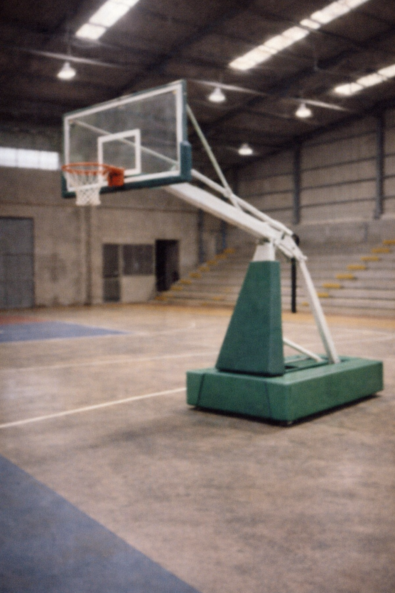
      </div>

      <button class="proj-arrow right" onclick="scrollProyecto('proj12', 1)">›</button>
    </div>
  </div>

  <h3>Sistema de Baloncesto para los Juegos Nacionales Nicoya 2002</h3>
  <p>Este sistema de baloncesto fue fabricado en el 2002 como parte de los equipos oficiales utilizados en los Juegos Nacionales Nicoya 2002.
     En aquella época, la empresa operaba desde un taller más modesto ubicado en San Pablo, donde aun así se alcanzaban altos estándares de calidad.
     Este proyecto representa una de las primeras grandes participaciones de la compañía en infraestructura deportiva nacional.
     Su construcción marcó un punto importante en la evolución técnica y productiva de la empresa.</p>
</article>

    <!-- CONTACTO -->
    <section id="contacto" class="section section-contacto">
      <div class="container">
        <div class="section-header">
          <div>
            <div class="section-title">Contacto</div>
          </div>
          <p class="section-subtitle">
            Compártanos la necesidad de su proyecto y con gusto le asesoramos
            para encontrar la solución ideal.
          </p>
        </div>

        <div class="contact-grid">
          <div class="contact-box">
            <h3>Información de contacto</h3>
            <p><strong>Teléfono:</strong> +506 2268-9797</p>
            <p><strong>Correo:</strong> info@cobybsa.com</p>
            <p><strong>Ubicación:</strong>Concepción, San Rafael, Heredia, Costa Rica</p>
            <p>
              También podemos coordinar una visita a planta o reunión presencial
              para revisar detalles técnicos de su proyecto.
            </p>
          </div>

          <div class="contact-box">
  <h3>Escríbanos directamente</h3>
  <p class="section-subtitle">

  <a
    href="mailto:adrian.bolanos@cobybsa.com?subject=Consulta%20desde%20sitio%20COBYBSA"
    class="btn btn-primary"
  >
    Enviar mensaje
  </a>
</div>

        </div>
      </div>
    </section>
  </main>

  <!-- FOOTER -->
  <footer class="site-footer">
    <div class="container footer-inner">
      <p>© <span id="2008"></span> cobybsa. Todos los derechos reservados.</p>
      <p>Ingeniería mecánica de precisión.</p>
    </div>
  </footer>

  <script>
    // Año automático
    document.getElementById('year').textContent = new Date().getFullYear();
  </script>
</body>
</html>


